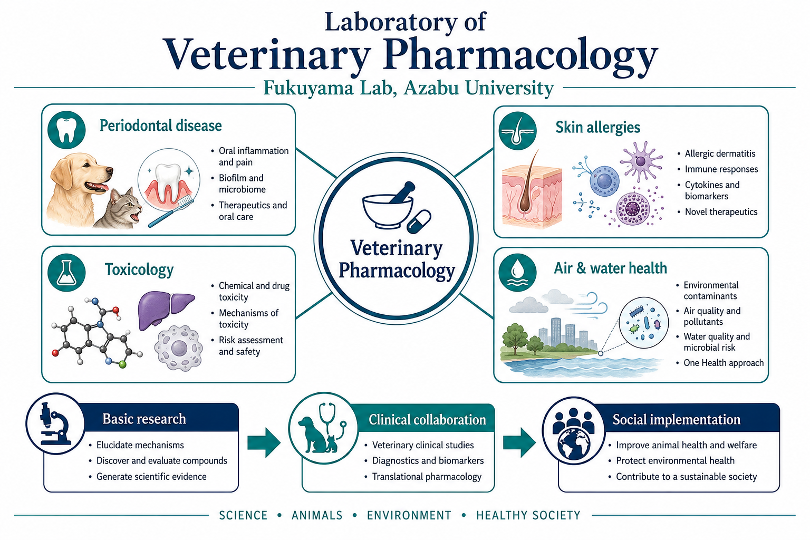

Periodontal Disease in Dogs and Cats
We study the prevention and care of periodontal disease in dogs and cats, including oral bacteria, inflammation, halitosis, and daily oral health care.
School of Veterinary Medicine, Azabu University
Fukuyama Lab studies disease prevention and health promotion in humans, dogs, and cats through veterinary pharmacology.
The Fukuyama Laboratory focuses on lifestyle- and environment-related factors associated with periodontal disease, allergic and skin diseases, toxic substances, and the effects of air and water on health.
We take an integrated approach that connects basic research with clinical practice. By combining disease models, cell culture experiments, microbiological and pharmacological analyses, and collaborations with veterinary hospitals, we aim to develop practical strategies for prevention, treatment, and daily health care.
Our research connects basic science, clinical collaboration, and social implementation to address practical questions in animal and human health.
The overview below summarizes the laboratory's main research areas and how they relate to veterinary pharmacology.

We study the prevention and care of periodontal disease in dogs and cats, including oral bacteria, inflammation, halitosis, and daily oral health care.
We investigate allergic and inflammatory skin diseases, with attention to immune responses, skin barrier function, itching, and environmental or dietary factors.
We study how toxic substances affect living organisms and how toxicity can be evaluated scientifically, contributing to safer environments and better biological understanding.
We examine how environmental factors such as air and water may influence allergy, inflammation, and health through basic and applied studies.
The Fukuyama Laboratory actively works with companies, veterinary hospitals, public institutions, and research organizations. Rather than limiting research to the laboratory, we aim to connect scientific findings with practical solutions for animal health and veterinary medicine.
For inquiries, please contact the laboratory through Azabu University or the information provided on the Japanese website.
Laboratory of Veterinary Pharmacology